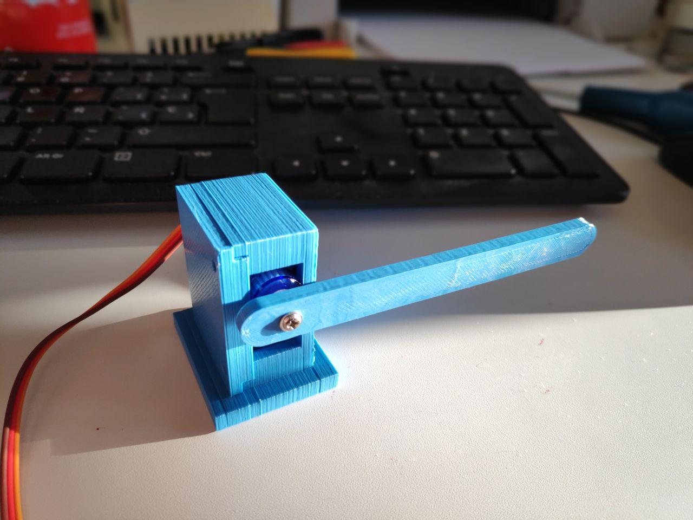
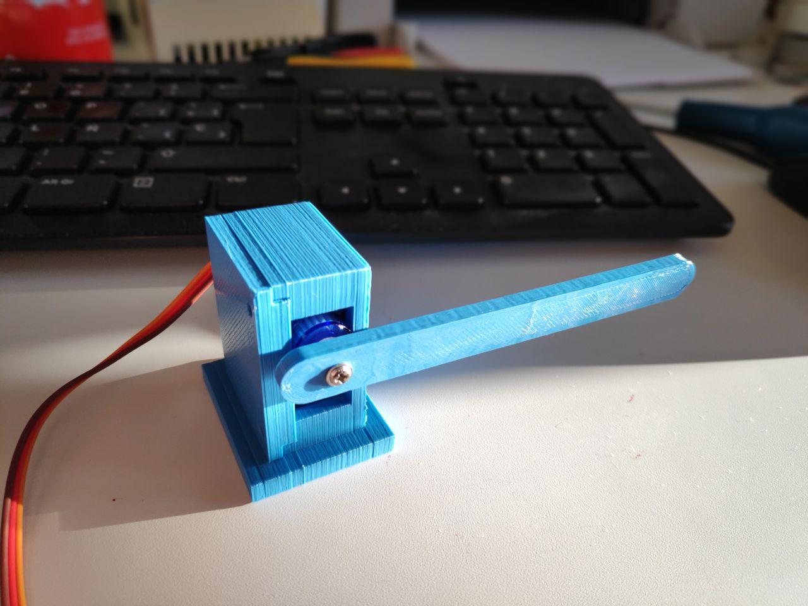
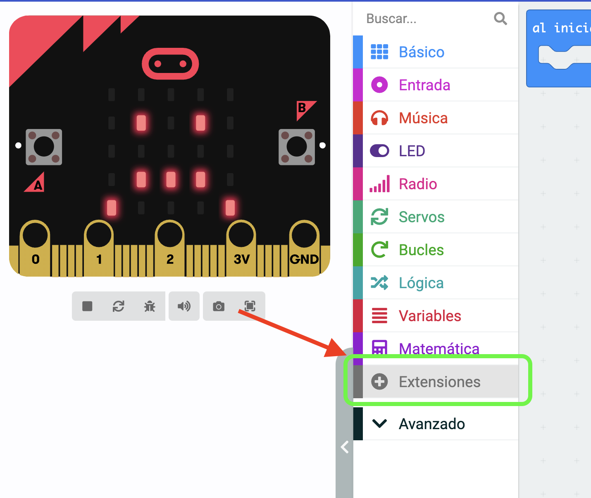
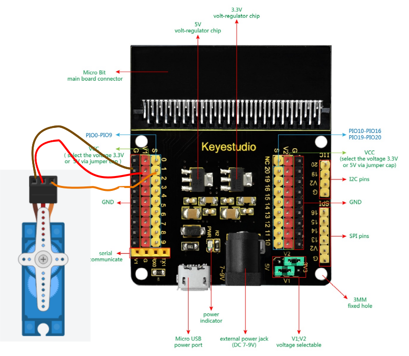

Caja y barrera para microservo
Para los siguientes proyectos se ha diseñado una barrera animada por un microservo, que contiene tres diseños: caja portaservo, tapa y barrera en si.

Para los siguientes proyectos se ha diseñado una barrera animada por un microservo, que contiene tres diseños: caja portaservo, tapa y barrera en si.

Es necesario incluir la extensión Servos para poder tener a disposición los bloques de control de microservos.

La posición de los microservos puede variar entre los -90 a 90 grados.
Como comentamos anteriormente la posición de los microservos puede variar entre los -90 a 90 grados. A -90 grados estará la barrera horizontal en un sentido, y a 90 grados estará horizontal en el otro sentido, a 0 grados la barrera estará vertical. Todo ello si el cursor del servo está bien calibrado.
Además para un buen conexionado del microservo debes usar un expansor de pines de micro:bit, y en nuestro caso conectar el microservo al pin 1.

El reto consiste en que cuando pulses el botón "A" de micro:bit la barrera debe subir al punto más alto (microservo a 0 grados), y sólo baja cuando pulsas el botón "B" de micro:bit al punto más bajo (puede ser microservo a -90 o 90 grados).

Obra publicada con Licencia Creative Commons Reconocimiento Compartir igual 4.0